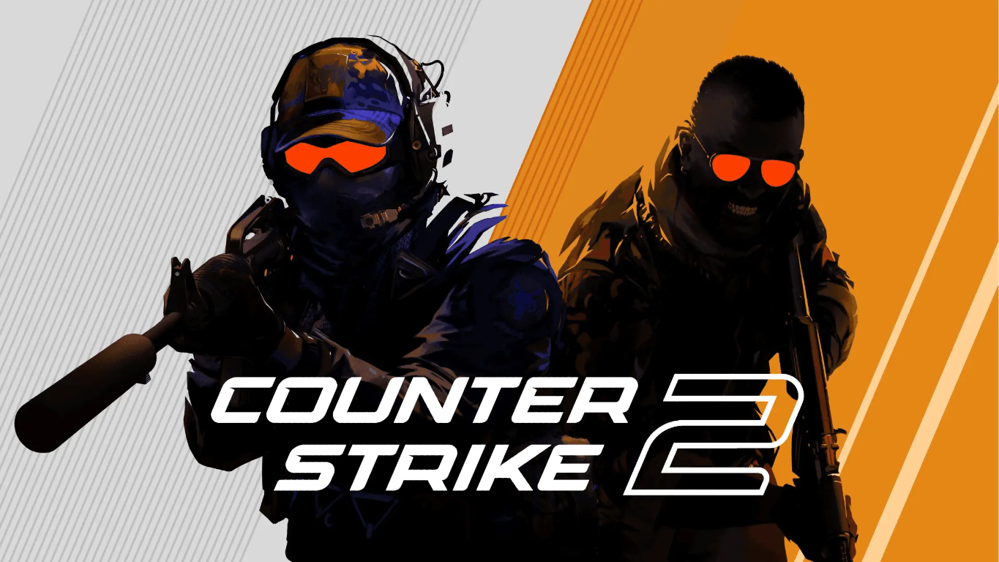
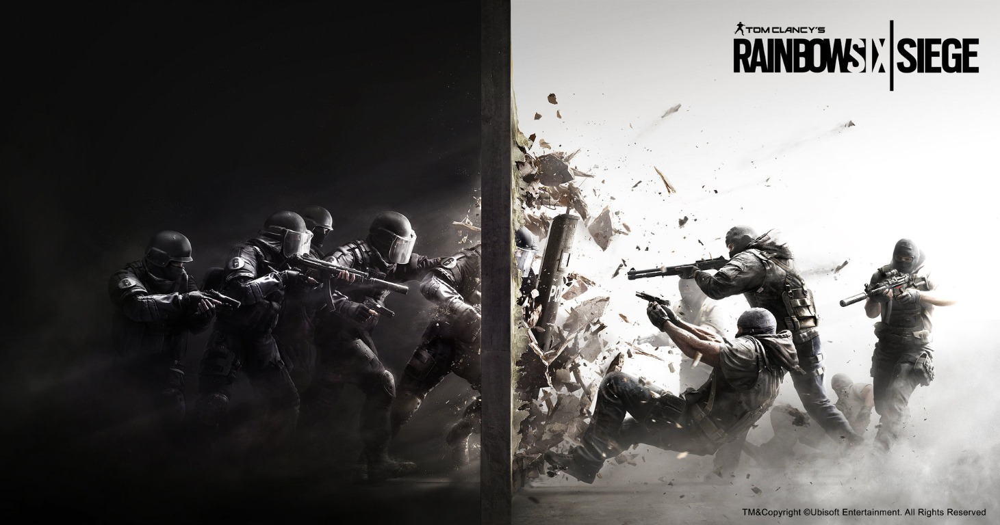
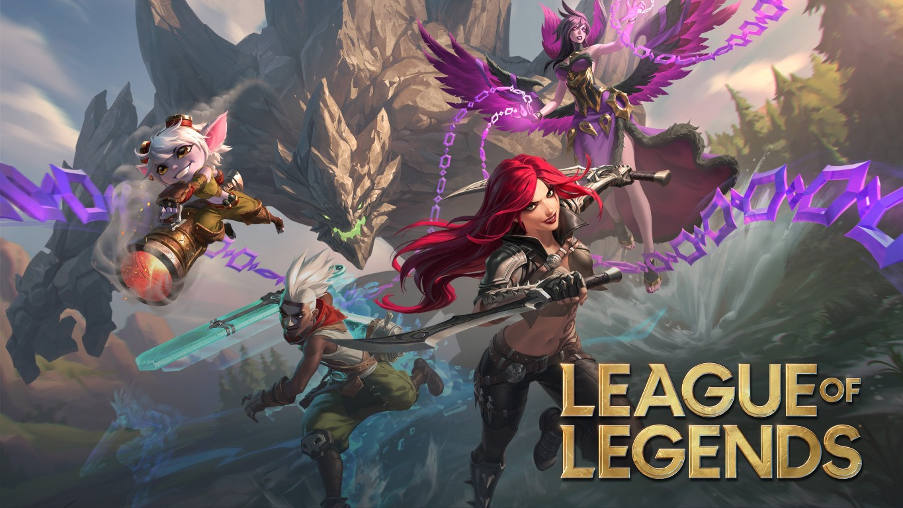
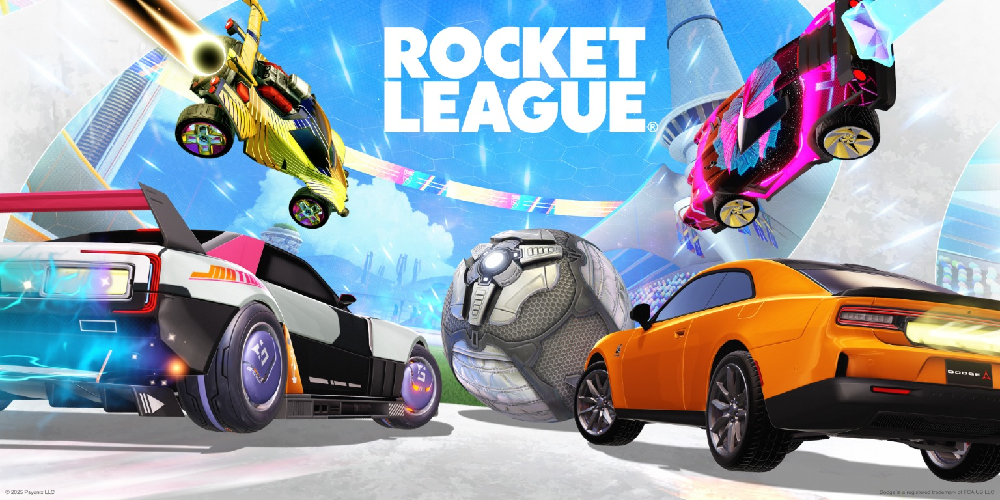
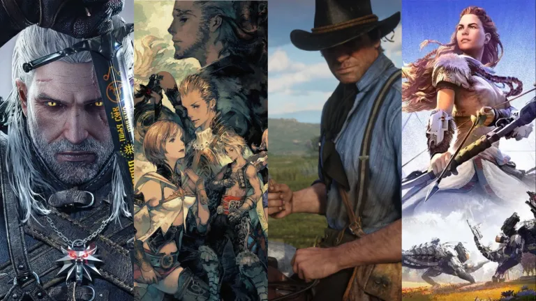

SURVIVAL · SHOOTER · GAMING
Még egy kör.
Ezúttal együtt.
CS2, Rainbow Six Siege, League of Legends, Rocket League és történetközpontú játékok — ezekkel játszunk az EMBIK Gaming csatornán.

EMBIK / GAMING MÉG EGYKÖR. ILLUSZTRÁCIÓ
AMIVEL JÁTSZUNK
Amikkel játszunk.
FPS · COMPETITIVE 01 / FPSCounter-Strike 2
Pörgős körök, pontos lövések és csapatmunka.
A CS2-videókat később ide rendezzük.

TACTICAL · TEAM PLAY
02 / TACTICAL SHOOTERRainbow Six Siege
Taktika, kütyük és összehangolt csapatjáték.
Az R6-videókat később ide rendezzük.

MOBA · TEAM STRATEGY
03 / MOBALeague of Legends
Hősök, stratégiák és közös csapatharcok.
A LoL-videókat később ide rendezzük.

ARCADE · CAR SOCCER
04 / ARCADERocket League
Autók, gólok és levegőben repülő mentések.
A Rocket League-videókat később ide rendezzük.

STORY · ADVENTURE · VEGYES
05 / STORY GAMESTörténetközpontú játékok
Hangulatos, felfedezős és történetközpontú játékok — a lista később bővül.
A story game-videókat később ide rendezzük.
CSATLAKOZZ A KÖVETKEZŐ MENETHEZ
Nézd meg az EMBIK Gaminget.
Discord-elérhetőséget is hozzáadunk, amint elküldöd a meghívó linkjét.